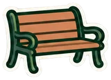

9:41
내 지도
총 18.6km

경로 지우기
기록한 장소 12
산책 기록 7
2026.11.26 산책
1.8km · 32분
지도에 보는 중
2026.11.24 산책
2.6km · 48분
경로 보기
2026.11.21 산책
1.1km · 19분
경로 보기
은행나무 쉼터
2026.11.26 · 전체 공개 · 피드 공유
노을 맛집 계단
2026.11.24 · 골목참새님이 보냄
햇살 드는 벤치
2026.11.21 · 친구만